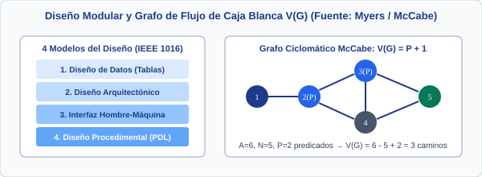

UNIDAD IV. DISEÑO Y PRUEBAS DEL SOFTWARE
Estudio detallado de los principios del diseño (Davis y McGlaughlin), abstracción, refinamiento, modularidad, arquitectura, jerarquía de control (Fan-in/Fan-out), ocultamiento de información (Parnas), los 7 niveles de Cohesión y 5 de Acoplamiento, especificación IEEE 1016, métodos de diseño (datos, arquitectónico de transformación/transacción, 3 reglas de oro de Theo Mandel para interfaces IHM, programación estructurada de Böhm-Jacopini y tablas de decisión), fundamentos de pruebas V&V, Caja Negra (partición equivalente y valores límite) y Caja Blanca (Complejidad Ciclomática de McCabe V(G), condiciones, flujo de datos DEF-USE y bucles).
4.1 Conceptos y principios del diseño del software
El diseño del software se sitúa en el núcleo técnico de la ingeniería de software y es la única etapa en la que se traducen los requisitos del cliente en una representación del software cuya calidad puede evaluarse antes de comenzar la codificación. Se divide en dos etapas iterativas: Diseño Preliminar (transforma los requisitos en una arquitectura de datos y de programa) y Diseño Detallado (se enfoca en el refinamiento de la representación arquitectónica hacia una estructura de datos detallada y las representaciones algorítmicas de cada módulo).
1. Los Tres Criterios de McGlaughlin y los Diez Principios de Diseño de Davis
Según McGlaughlin, un buen diseño debe: (1) implementar todos los requisitos explícitos contenidos en el modelo de análisis y dar cabida a todos los requisitos implícitos que desea el cliente; (2) ser una guía legible y comprensible para quienes generan el código y para quienes lo prueban y mantienen; y (3) proporcionar una completa idea de lo que es el software, abordando los dominios de datos, funcional y de comportamiento desde el punto de vista de la implementación.
Los 10 Principios Fundamentales del Diseño (Alan Davis): (1) El diseño no debe sufrir «visión de túnel» (debe considerar alternativas); (2) Debe ser rastreable hasta el modelo de análisis; (3) No debe reinventar la rueda (usar patrones de diseño probados); (4) Debe minimizar la distancia intelectual entre el software y el problema en el mundo real; (5) Debe exhibir uniformidad e integración; (6) Debe estructurarse para admitir cambios; (7) Debe estructurarse para degradarse con suavidad ante datos o sucesos anómalos; (8) El diseño no es codificación, y la codificación no es diseño; (9) Debe evaluarse su calidad a medida que se va creando, no después de terminado; y (10) Debe revisarse para descubrir errores conceptuales (semánticos).
2. Conceptos Fundamentales del Diseño
| Concepto de Diseño | Definición y Aplicación Técnica |
|---|---|
| Abstracción | Permite concentrarse en un problema a algún nivel de generalización sin considerar los detalles irrelevantes de bajo nivel. Existen tres formas: Abstracción procedimental (secuencia de instrucciones con nombre, ej. abrir_puerta), Abstracción de datos (colección nombrada de datos que describe un objeto) y Abstracción de control (mecanismo de coordinación sin especificar detalles internos, como un semáforo de sincronización). |
| Refinamiento Sucesivo | Propuesto por Niklaus Wirth, es una estrategia de diseño top-down de elaboración paso a paso. Mientras la abstracción oculta los detalles internos, el refinamiento ayuda al diseñador a revelar los detalles de bajo nivel a medida que avanza el diseño. |
| Modularidad | El software se divide en componentes con nombres independientes y abordables por separado (módulos) que se integran para satisfacer los requisitos. Al aumentar el número de módulos disminuye el esfuerzo de desarrollar cada uno, pero llega un punto en que crece el costo de integrarlos: por ello existe un número óptimo de módulos que minimiza el costo total. |
| Arquitectura del Software | Alude a la estructura global del software y las formas en que esa estructura proporciona integridad conceptual a un sistema (la organización jerárquica de los componentes o módulos, la manera en que interactúan y la estructura de los datos que utilizan). |
| Jerarquía de Control (Fan-in y Fan-out) | Representa la organización de los componentes del programa e implica una jerarquía de control: Profundidad (número de niveles de control), Anchura (amplitud global del control), Fan-out (grado de salida) (medida del número de módulos que son controlados directamente por otro módulo; un Fan-out muy alto indica que el módulo controla demasiado) y Fan-in (grado de entrada) (indica cuántos módulos superiores controlan o llaman a un módulo dado; un Fan-in alto indica buena reutilización). |
| Partición Estructural | La estructura de un programa puede dividirse tanto horizontalmente (definiendo ramas modulares separadas para las funciones de entrada, transformación y salida) como verticalmente (factoring) (los módulos de nivel superior toman decisiones de control y los módulos de nivel inferior realizan todo el trabajo de entrada, cálculo y salida). |
| Ocultamiento de Información (Parnas) | Propuesto por David Parnas: los módulos deben especificarse y diseñarse de forma que la información (algoritmos y estructuras de datos locales) contenida dentro de un módulo sea inaccesible para otros módulos que no tengan necesidad de tal información. Evita que los cambios se propaguen durante el mantenimiento. |
3. Diseño Modular Efectivo: Independencia Funcional (Cohesión y Acoplamiento)
La independencia funcional se consigue desarrollando módulos con una función «miope» (única) y una «aversión» a la excesiva interacción con otros módulos. Se evalúa mediante dos criterios cualitativos propuestos por Constantine y Yourdon: la Cohesión (fuerza funcional relativa de un módulo) y el Acoplamiento (grado de interdependencia entre módulos). Meta: Alta cohesión y bajo acoplamiento.
| Los 7 Niveles de Cohesión (De Peor a Mejor) | Descripción Técnica |
|---|---|
| 1. Cohesión Casual (Coincidental) — La peor | Un módulo realiza un conjunto de tareas que no tienen ninguna relación lógica entre sí. |
| 2. Cohesión Lógica | Un módulo realiza tareas que se relacionan lógicamente (ej. todas las salidas de error), pero el llamador debe pasar un indicador para elegir cuál ejecutar. |
| 3. Cohesión Temporal | Contiene tareas relacionadas por el hecho de que todas deben ejecutarse en el mismo lapso de tiempo (ej. un módulo de inicialización o cierre del sistema). |
| 4. Cohesión Procedimental | Los elementos de procesamiento de un módulo están relacionados y deben ejecutarse en un orden específico de flujo de control. |
| 5. Cohesión Comunicacional | Todos los elementos de procesamiento del módulo se concentran en un área de una estructura de datos (operan sobre los mismos datos de entrada o salida). |
| 6. Cohesión Secuencial | Los elementos de procesamiento agrupan operaciones tales que la salida de un elemento sirve directamente como entrada para el siguiente. |
| 7. Cohesión Funcional — La mejor (Meta) | Todos los elementos del módulo contribuyen íntegramente a realizar una y solo una función bien definida del problema. |
| Los 5 Niveles de Acoplamiento (De Peor a Mejor) | Descripción Técnica |
|---|---|
| 1. Acoplamiento de Contenido — El peor | Un módulo hace referencia directa o modifica datos internos o salta en medio del código de otro módulo. Rompe por completo el ocultamiento de información. |
| 2. Acoplamiento Común (Global) | Varios módulos acceden y modifican una misma área de datos globales compartidos. Un cambio en uno puede provocar efectos colaterales impredecibles en todos los demás. |
| 3. Acoplamiento de Control | Un módulo pasa una «bandera de control» (variable booleana o interruptor) que dirige las decisiones lógicas internas de otro módulo. |
| 4. Acoplamiento de Sello (Stamp) | Se pasa una estructura de datos compuesta completa como parámetro a un módulo que en realidad solo necesita uno o dos campos de esa estructura. |
| 5. Acoplamiento de Datos — El mejor (Meta) | Los módulos se comunican exclusivamente pasando por su lista de argumentos los datos elementales estrictamente necesarios. |

Figura 4.1: Las 4 capas del modelo de diseño (IEEE 1016) y Grafo de Flujo de McCabe. Fuente: Pressman (2010) y McCabe (1976).
Video Explicativo del Tema 4.1
Fuente del video: Arquitectura y Diseño Modular — https://www.youtube.com/watch?v=okL_O0jpQYQ
4.2 Modelado y documentación del diseño (IEEE Std 1016)
1. Trazabilidad entre el Modelo de Análisis y los 4 Componentes del Modelo de Diseño
Cada uno de los elementos del modelo de análisis proporciona la información necesaria para crear los cuatro modelos de diseño:
| Capa del Modelo de Diseño | Elementos del Análisis de donde Proviene | Qué Define en el Diseño |
|---|---|---|
| 1. Diseño de Datos | Diagrama Entidad-Relación (DER) y Diccionario de Datos (DD). | Transforma el modelo del dominio de información en las estructuras de datos necesarias para implementar el software y el esquema de tablas de la base de datos. |
| 2. Diseño Arquitectónico | Diagramas de Flujo de Datos (DFD) y relaciones de control. | Define la relación entre los principales elementos estructurales del programa y los patrones de diseño aplicables. |
| 3. Diseño de la Interfaz | DFD, Diagrama de Transición de Estados (DTE) y Casos de Uso. | Describe cómo se comunica el software dentro de sí mismo (entre módulos), con los sistemas que interoperan con él y con los operadores humanos (IHM). |
| 4. Diseño a Nivel de Componentes (Procedimental) | Especificaciones de Procesos (PSPEC) y Especificaciones de Control (CSPEC). | Transforma los elementos estructurales de la arquitectura del software en una descripción procedimental (algorítmica) de los componentes del software. |
2. Estructura de la Especificación del Diseño (Estándar IEEE Std 1016 / Pressman)
- 1. Ámbito General: Objetivos de diseño del sistema, hardware, software e interfaces externas, principales funciones y restricciones o limitaciones de memoria/tiempo.
- 2. Documentos de Referencia: Especificación de requisitos (ERS) aprobada, estándares técnicos y manuales de fabricante.
- 3. Descripción del Diseño de Datos y Arquitectónico: Estructura lógica y física de archivos y tablas, y representación de la estructura modular del programa tras aplicar análisis de transformación y transacción.
- 4. Especificación de Interfaces: Diseño de pantallas IHM, reportes, protocolos de red y firmas de llamadas entre módulos.
- 5. Descripción Procedimental de cada Módulo: Narrativa de procesamiento, descripción de interfaz (parámetros de entrada/salida), diseño procedimental detallado en PDL (Lenguaje de Diseño de Programas / Pseudocódigo), módulos subordinados que invoca, estructuras de datos locales y restricciones.
- 6. Matriz de Referencias Cruzadas (Trazabilidad de Requisitos): Tabla que cruza cada requisito funcional (
RF-01..RF-n) contra los módulos exactos del diseño que lo implementan, garantizando que ningún requisito quedó olvidado ni existen módulos huérfanos. - 7. Disposiciones para la Etapa de Pruebas: Directrices para el plan de pruebas unitarias y de integración.
Video Explicativo del Tema 4.2
Fuente del video: Ingeniería de Diseño de Software — https://www.youtube.com/watch?v=Qv9WhqxnOvw
4.3 Métodos de diseño: Datos, Arquitectónico, Interfaces Hombre-Máquina, Procedimental y Optimización
1. Diseño de Datos (Principios de Wasserman y Paso de DER a Tablas Relacionales)
El diseño de datos se realiza en tres niveles: a nivel de componente (arreglos, listas enlazadas, pilas, árboles), a nivel de aplicación (base de datos relacional del sistema) y a nivel empresarial (Data Warehouse). Wasserman propone 6 principios: aplicar principios de análisis sistemático a los datos, identificar todas las estructuras de datos y las operaciones que se realizarán sobre cada una, establecer un diccionario de datos, posponer las decisiones de diseño de datos de bajo nivel hasta el final del proceso, ocultar la representación interna de las estructuras de datos a través de tipos de datos abstractos (TDA) y desarrollar una biblioteca de estructuras de datos reutilizables.
| Elemento en el Modelo Entidad-Relación (DER) | Transformación en el Diseño de Base de Datos Relacional (SQL) |
|---|---|
| Cada Entidad (Objeto de datos) | Se convierte en una Tabla independiente. |
| Cada Atributo simple | Se convierte en una Columna (Campo) con su tipo de dato y restricción NOT NULL. |
| El Atributo Identificador | Se declara como Clave Primaria (PRIMARY KEY) de la tabla. |
| Relación Uno a Muchos (1:N) | La clave primaria de la tabla del lado «1» se propaga como Clave Foránea (FOREIGN KEY) dentro de la tabla del lado «N». |
| Relación Muchos a Muchos (M:N) | Se crea una Tabla Intermedia (Asociativa) que incluye como claves foráneas las claves primarias de ambas entidades más los atributos propios de la relación. |
2. Diseño Arquitectónico (Estilos y Análisis de Transformación y Transacción)
Los 5 estilos arquitectónicos clásicos son: (1) Arquitecturas centradas en los datos (un almacén o base de datos central al que acceden clientes independientes), (2) Arquitecturas de flujo de datos (tuberías y filtros / pipes and filters), (3) Arquitecturas de llamada y retorno (estructura jerárquica de programa principal y subprogramas), (4) Arquitecturas orientadas a objetos y (5) Arquitecturas en capas (presentación UI, lógica de negocio BLL y acceso a datos DAL).
El método de Diseño Estructurado (Yourdon y Constantine) traduce un DFD en una jerarquía modular de llamada y retorno identificando dos tipos de flujo:
- Análisis de Transformación: Se aplica cuando los datos entran por un camino de flujo entrante (aferente), pasan por un centro de transformación (cálculos internos) y salen por un flujo saliente (eferente). El mapeo coloca un controlador raíz arriba y tres controladores subordinados debajo: controlador de entrada, controlador de transformación y controlador de salida.
- Análisis de Transacción: Se aplica cuando un solo elemento de información (la transacción, por ejemplo la opción elegida en el menú de un cajero automático) dispara una de entre muchas rutas de acción posibles desde un centro de transacción. El mapeo crea un módulo receptor (que lee la transacción) y un módulo despachador (que invoca al controlador de la ruta elegida: Retiro, Depósito, Consulta, Transferencia).
3. Diseño de Interfaces Hombre-Máquina (IHM / UI-UX y las 3 Reglas de Oro de Theo Mandel)
El diseño de la interfaz concilia cuatro modelos: el modelo de diseño (creado por el ingeniero), el modelo del usuario (perfil de usuarios principiantes, esporádicos con conocimientos o expertos frecuentes), la percepción del sistema (modelo mental del usuario) y la imagen del sistema (apariencia visual y manuales). Theo Mandel acuñó las Tres Reglas de Oro sobre las que descansa todo diseño de interfaces:
- Regla 1 — Dar el control al usuario: Definir modos de interacción de manera que no obliguen al usuario a realizar acciones innecesarias o no deseadas; ofrecer interacción flexible (teclado, ratón, táctil); permitir que la interacción sea interrumpible y reversible (Deshacer / Undo); agilizar la interacción con atajos a medida que avanza el nivel de habilidad; ocultar los detalles técnicos internos al usuario casual; y diseñar para la interacción directa con los objetos de la pantalla.
- Regla 2 — Reducir la carga de memoria del usuario: Reducir la necesidad de memorizar datos de una pantalla a otra; establecer valores predeterminados (defaults) significativos; definir atajos que sean intuitivos (ej.
Ctrl+Gpara Guardar); basar la disposición visual de la interfaz en una metáfora del mundo real; y revelar la información de manera progresiva (no saturar la pantalla). - Regla 3 — Lograr que la interfaz sea consistente: Permitir que el usuario coloque la tarea actual en un contexto significativo (migas de pan, títulos claros); mantener la consistencia visual y de colores en toda la familia de pantallas; y si los modelos interactivos previos han creado expectativas en el usuario, no realizar cambios a menos que haya una razón ineludible.
4. Diseño Procedimental (Böhm-Jacopini) y Optimización del Diseño
El diseño procedimental especifica el detalle algorítmico tras establecer la arquitectura, basándose en los constructos de la Programación Estructurada (Dijkstra, Böhm y Jacopini): todo algoritmo lógico puede representarse exclusivamente con Secuencia, Condición (if-then-else / select-case) y Repetición (while / repeat-until), donde cada bloque posee una única entrada y una única salida.
| Notación de Diseño Procedimental | Características y Ventajas |
|---|---|
| Diagrama de Flujo | Usa cajas para procesos, rombos para decisiones y flechas para el flujo. Es muy visual, pero si se abusa de las flechas puede inducir diseños no estructurados («código espagueti»). |
| Diagrama de Cajas (Nassi-Shneiderman) | Representa cada estructura como cajas anidadas sin flechas arbitrarias, obligando físicamente a respetar la programación estructurada con una entrada y una salida. |
| Tabla de Decisión | Excelente cuando un módulo evalúa combinaciones complejas de condiciones. Se divide en 4 cuadrantes (Condiciones arriba a la izquierda, Acciones abajo a la izquierda, Reglas 2^n a la derecha). |
| Lenguaje de Diseño de Programas (PDL / Pseudocódigo) | Combina las palabras clave de un lenguaje estructurado con frases en idioma natural. Es fácil de escribir, revisar en una RTF y traducir directamente a C#, VB.NET o Python. |
Optimización del Diseño: Sigue la regla «primero haz que funcione y sea mantenible; después optimiza solo los cuellos de botella medidos», procurando mantener el alcance del efecto de una decisión dentro del alcance de control del módulo que toma esa decisión y un Fan-out menor o igual a 7.
Video Explicativo del Tema 4.3
Fuente del video: Diseño de Interfaces y Sistemas — https://www.youtube.com/watch?v=Z1QzSqFryPY
4.4 Fundamentos y métodos de prueba del software
1. Objetivos de la Prueba (Glenford Myers) y Verificación vs. Validación
A diferencia de las etapas constructivas previas, la etapa de pruebas requiere una mentalidad constructivamente «destructiva». Glenford Myers establece tres reglas que sirven como objetivos de la prueba:
- La prueba es el proceso de ejecutar un programa con la intención de encontrar un error.
- Un buen caso de prueba es aquel que tiene una alta probabilidad de encontrar un error aún no descubierto.
- Una prueba tiene éxito si descubre un error no detectado hasta entonces.
Como afirmó Edsger Dijkstra, «las pruebas solo pueden demostrar la presencia de errores en un programa, nunca su ausencia total». Asimismo, las pruebas forman parte de las actividades de Verificación y Validación (V&V) definidas por Boehm:
| Verificación | Validación |
|---|---|
| «¿Estamos construyendo el producto correctamente?» Conjunto de actividades que aseguran que el software implementa correctamente una función específica conforme al diseño y estándares. |
«¿Estamos construyendo el producto correcto?» Conjunto de actividades que aseguran que el software construido es trazable a los requisitos del cliente y satisface sus necesidades reales. |
2. Los Seis Principios de las Pruebas (Davis) y Por Qué es Imposible la Prueba Exhaustiva
- 1. Todas las pruebas deben poder rastrearse hasta los requisitos del cliente: Los defectos más graves son aquellos que impiden cumplir un requisito del usuario.
- 2. Las pruebas deben planificarse mucho antes de que empiecen: La planificación comienza desde que se redacta la ERS y se consolida en el diseño.
- 3. El principio de Pareto (80/20) se aplica a las pruebas del software: Aproximadamente el 80% de todos los errores descubiertos durante las pruebas se concentran en el 20% de los módulos del programa.
- 4. Las pruebas deben empezar «por lo pequeño» y progresar hacia «lo grande»: Inician en Pruebas Unitarias (cada módulo aislado), avanzan a Pruebas de Integración (descendente con módulos ficticios stubs o ascendente con impulsores drivers, más pruebas de regresión), continúan con Pruebas de Validación (pruebas Alfa en el sitio del desarrollador y Beta en el sitio del cliente) y culminan en Pruebas del Sistema (recuperación, seguridad, resistencia/estrés y rendimiento).
- 5. No son posibles las pruebas exhaustivas: Incluso en un programa pequeño de 100 líneas con un solo bucle que se repite hasta 20 veces y contiene 4 decisiones internas, existen
5^20 ≈ 95.3 × 10^12caminos posibles de ejecución. Si un procesador ejecutara un caso de prueba cada milisegundo sin parar, tardaría 3,170 años en probar todos los caminos. Por eso necesitamos técnicas de diseño de casos de prueba que seleccionen un subconjunto pequeño pero de máxima eficacia. - 6. Para ser más eficaces, las pruebas deberían ser conducidas por un tercero independiente (Grupo de Pruebas Independiente — GPI).
3. Atributos de Facilidad de Prueba (Testabilidad — James Bach)
La testabilidad es la facilidad con la que se puede probar un programa de computadora y depende de 7 características: Operabilidad («cuanto mejor funciona, más eficientemente se puede probar»), Observabilidad («lo que ves es lo que pruebas»), Controlabilidad («cuanto mejor podamos controlar el software y sus entradas, más se puede automatizar la prueba»), Capacidad de descomposición (aislar módulos independientes), Simplicidad (funcional, estructural y de código), Estabilidad (pocos cambios durante las pruebas) y Facilidad de comprensión (buena documentación).
Video Explicativo del Tema 4.4
Fuente del video: Testing y QA de Software — https://www.youtube.com/watch?v=onuiC6BQuOY
4.5 Diseño de casos de prueba (Técnicas de Caja Negra)
Las pruebas de Caja Negra —también llamadas pruebas de comportamiento o funcionales— se centran en los requisitos funcionales del software y se realizan sobre la interfaz del programa sin preocuparse por su estructura lógica interna. Intentan descubrir errores en las siguientes categorías: (1) funciones incorrectas o ausentes, (2) errores de interfaz, (3) errores en estructuras de datos o en el acceso a bases de datos externas, (4) errores de comportamiento o rendimiento, y (5) errores de inicialización y terminación.
1. Partición de Equivalencia
Divide el dominio de entrada de un programa en clases de equivalencia de datos de las que se puede derivar un caso de prueba representativo. Una clase de equivalencia representa un conjunto de estados válidos o inválidos para condiciones de entrada:
| Si la condición de entrada especifica... | Clases de Equivalencia Válidas | Clases de Equivalencia Inválidas |
|---|---|---|
| Un rango de valores (ej. de 18 a 65) | 1 clase válida (cualquier valor dentro del rango 18 ≤ x ≤ 65) | 2 clases inválidas (una con valores x < 18 y otra con valores x > 65) |
| Un valor específico o cantidad exacta | 1 clase válida (el valor exacto requerido) | 2 clases inválidas (valores menores y valores mayores al requerido) |
| Un miembro de un conjunto (ej. Turno 1, 2 o 3) | 1 clase válida (pertenecer al conjunto) | 1 clase inválida (cualquier valor fuera del conjunto) |
| Una condición lógica (Booleana) | 1 clase válida | 1 clase inválida |
2. Análisis de Valores Límite (AVL / BVA)
Por razones que nunca están del todo claras, un mayor número de errores tiende a producirse en las fronteras del dominio de entrada que en el «centro» (por ejemplo, cuando el programador escribe if (edad < 65) en lugar de if (edad <= 65)). El Análisis de Valores Límite complementa la partición equivalente seleccionando casos de prueba exactamente en los bordes de la clase:
- Si una condición de entrada especifica un rango acotado por los valores a y b (por ejemplo
[18, 65]), se deben diseñar casos de prueba con los valores a y b (18y65) así como justo por encima y justo por debajo de a y de b (17, 19, 64, 66). - Si una condición especifica un número de valores (ej. un pedido permite de 1 a 20 artículos), se prueban
0, 1, 2, 19, 20 y 21artículos. - También se aplica el mismo criterio sobre los límites del dominio de salida (ej. el monto máximo imprimible en un reporte) y los límites de estructuras internas (como el primer y último índice de un arreglo).
3. Técnicas Complementarias: Grafos de Causa-Efecto y Pruebas de Comparación
La técnica de Grafos de Causa-Efecto traduce las causas (condiciones de entrada) y los efectos (acciones de salida) en un grafo lógico que posteriormente se convierte en una tabla de decisión para derivar un caso de prueba por regla. Las Pruebas de Comparación (Back-to-Back Testing) se usan en sistemas críticos redundantes donde varios equipos desarrollan versiones independientes del mismo software y se les inyectan las mismas entradas en paralelo para comparar que sus salidas sean idénticas.
Video Explicativo del Tema 4.5
Fuente del video: Ingeniería de Pruebas Funcionales — https://www.youtube.com/watch?v=f4Rt26hoeFY
4.6 Pruebas de caja blanca y pruebas de estructura de control
La prueba de Caja Blanca (también llamada prueba de caja de cristal) es un método de diseño de casos de prueba que utiliza la estructura de control del diseño procedimental para obtener casos de prueba que garanticen que: (1) se ejerciten por lo menos una vez todos los caminos independientes de cada módulo; (2) se ejerciten todas las decisiones lógicas en sus vertientes verdadera y falsa; (3) se ejecuten todos los bucles en sus límites operacionales; y (4) se ejerciten las estructuras internas de datos para asegurar su validez.
1. Prueba del Camino Básico (Thomas McCabe) y Complejidad Ciclomática V(G)
Propuesta por Thomas McCabe, la técnica del camino básico se ejecuta en cuatro pasos metódicos:
- Paso 1 — Dibujar el Grafo de Flujo: Se traduce el código o pseudocódigo a un grafo dirigido donde cada nodo (círculo) representa una o más sentencias secuenciales sin ramificaciones, cada arista (flecha) representa el flujo de control, cada nodo predicado es un nodo que contiene una condición lógica de la que salen dos o más aristas, y las áreas delimitadas por aristas y nodos (incluyendo el área exterior abierta) se denominan regiones. (Si una sentencia
if (a AND b)tiene una condición compuesta, cada condición simple se separa en su propio nodo predicado). - Paso 2 — Calcular la Complejidad Ciclomática
V(G): Es una métrica de software que proporciona una medida cuantitativa de la complejidad lógica de un programa y define el número exacto de caminos independientes del conjunto básico (es decir, la cota superior del número de pruebas necesarias para garantizar que se ejecuta cada sentencia al menos una vez). Se calcula por cualquiera de tres fórmulas equivalentes:
- Paso 3 — Determinar el Conjunto Básico de Caminos Linealmente Independientes: Un camino independiente es cualquier camino del programa que introduce por lo menos un nuevo conjunto de sentencias de procesamiento o una nueva condición (en términos del grafo, debe recorrer al menos una arista que no haya sido recorrida antes).
- Paso 4 — Preparar los Casos de Prueba: Se diseña un caso de prueba con datos de entrada y resultados esperados que fuerce la ejecución de cada uno de los
V(G)caminos del conjunto básico. (McCabe recomienda mantenerV(G) ≤ 10por módulo; si un módulo supera 10, es propenso a errores y debe refactorizarse).
• Nodo 1:
suma = 0; i = 1;• Nodo 2 (Predicado P1):
mientras (i <= n)• Nodo 3 (Predicado P2):
si (i % 2 == 0)• Nodo 4:
suma = suma + i;• Nodo 5:
i = i + 1; (vuelve al Nodo 2)• Nodo 6:
retornar suma;Cálculo de V(G): Hay
N = 6 nodos, A = 7 aristas (1→2, 2→3, 2→6, 3→4, 3→5, 4→5, 5→2) y P = 2 predicados (Nodos 2 y 3).→
V(G) = A − N + 2 = 7 − 6 + 2 = 3 | V(G) = P + 1 = 2 + 1 = 3 caminos independientes.• Camino 1:
1 → 2 → 6 (Caso de prueba: n = 0 → Resultado esperado: suma = 0).• Camino 2:
1 → 2 → 3 → 5 → 2 → 6 (Caso de prueba: n = 1 → Resultado esperado: suma = 0).• Camino 3:
1 → 2 → 3 → 4 → 5 → 2 → 6 (Caso de prueba: n = 2 → Resultado esperado: suma = 2).
2. Pruebas de la Estructura de Control (Condición, Flujo de Datos y Bucles)
- 1. Prueba de Condición: Ejercita las condiciones lógicas contenidas en un módulo para detectar errores en operadores booleanos (
OR / AND / NOT), errores en variables booleanas, errores en paréntesis booleanos, errores en operadores relacionales (<, <=, ==, !=, >, >=) y errores en expresiones aritméticas. - 2. Prueba del Flujo de Datos (Cadenas Definición-Uso): Selecciona caminos de prueba de un programa de acuerdo con la ubicación de las definiciones (
DEF(S): donde se asigna o modifica el valor de una variable) y los usos (USE(S): donde se lee la variable en un cálculo o condición). Una cadena definición-uso (DU) de la variableXes de la forma[X, S, S'], dondeXse define en la sentenciaSy llega viva (sin ser redefinida en el camino) hasta ser usada enS'. Permite descubrir variables usadas sin inicializar o asignaciones muertas. - 3. Prueba de Bucles: Se centra exclusivamente en la validez de las construcciones de bucles, los cuales se dividen en cuatro clases:
| Clase de Bucle | Conjunto de Pruebas que Debe Aplicarse (Siendo n el máximo de iteraciones permitidas) |
|---|---|
| 1. Bucles Simples | (a) Pasar por alto totalmente el bucle (0 pasadas); (b) Pasar 1 sola vez por el bucle; (c) Pasar 2 veces por el bucle; (d) Hacer m pasadas donde m < n; y (e) Hacer n − 1, n y n + 1 pasadas por el bucle. |
| 2. Bucles Anidados (Método de Beizer) | Si probáramos todas las combinaciones crecerían geométricamente. Por ello: (a) Se comienza en el bucle más interno manteniendo todos los bucles externos en su valor mínimo; (b) Se aplican las pruebas de bucle simple al bucle interno; (c) Se progresa hacia afuera probando el siguiente bucle mientras los externos siguen al mínimo y los internos en valores típicos, hasta cubrir todos. |
| 3. Bucles Concatenados | Si los dos bucles seguidos son independientes entre sí, se prueban como bucles simples. Si el contador del primer bucle sirve como valor inicial del segundo, se prueban con la estrategia de bucles anidados. |
| 4. Bucles No Estructurados | Bucles con saltos cruzados hacia adentro y hacia afuera: no se pueden probar de forma fiable y deben rediseñarse usando los constructos de la programación estructurada. |
Video Explicativo del Tema 4.6
Fuente del video: Pruebas Estructurales de Software — https://www.youtube.com/watch?v=GVegCwwfBZ0
Autoevaluación Interactiva de la Unidad IV
Responde las siguientes 5 preguntas sobre Diseño y Pruebas del Software: